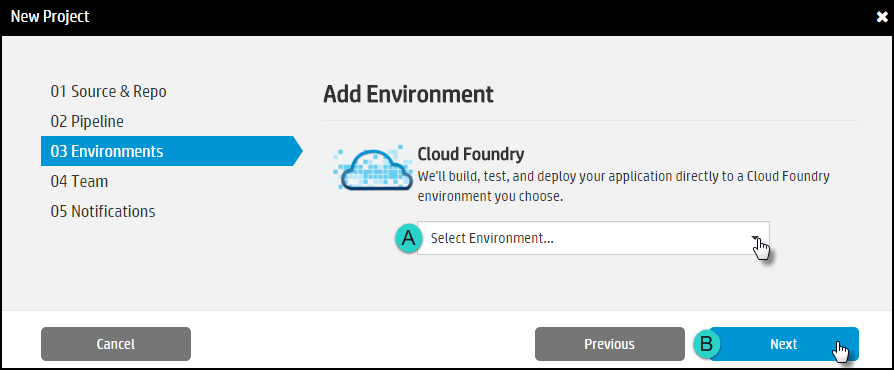
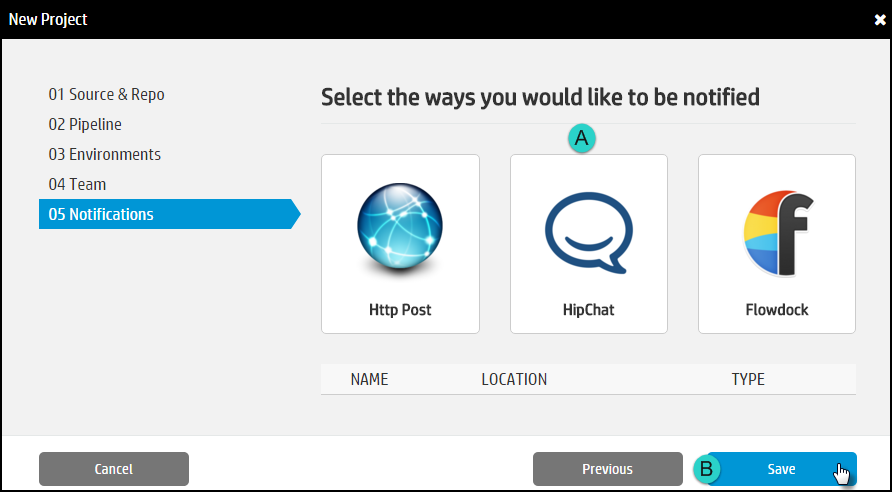

The Project is a workspace where the application is built.
- Click the Projects tab and then click New Project.

- Specify the source for this project:

- Enter a Project Name.
- Select a source:
- GitHub: Click to connect to a repository hosted on GitHub that you own or have admin rights to. Select the repository to associate with this project and then click Select.
- Git: Connect to a repository hosted locally. Enter the Name of the repo and the Clone URL and click Select.
- Click Next.
- Define the Pipeline:

- Branch: Select the target environment to deploy to. If the target environment has not yet been created, click Create New Environment.
- Project Type: Select the appropriate development language.
- Click Next.
- Define the Environment
 - Team

- Notification.
- Select the Type of Notification and then
provide the required credentials.
- HTTP Post
- Notification Target Name: Enter the name of the person to notify.
- HTTP Endpoint: Specify an endpoint where HelionCI events should be sent. Very similar to defining a webhook. Examples would be the URL of an internal website, a communication tool, or an RSS feed.
- Token: Generate a token as required for the target endpoint. The method will vary depending on the target.
- Click Save.
- HipChat
- Notification Target Name: Enter the name of the person to notify.
- Hipchat Room Number: How to Find
- Token: How to Generate
- Click Save.
- Flowdock
- Notification Target Name: Enter the name of the person to notify.
- API Endpoint: How to Find
- Token: How to Generate
- Click Save.
- HTTP Post
- Click Save.
- Select the Type of Notification and then
provide the required credentials.